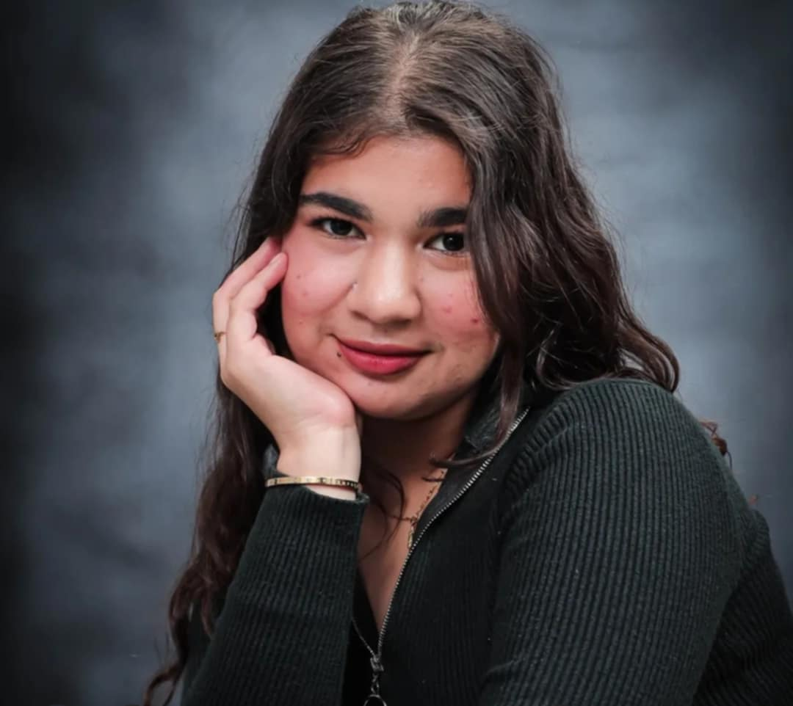

Welcome to my WS 101 Portfolio!
This portfolio is a glimpse of my learning journey, featuring my lab tasks and the creativity I explored throughout the course.
Hi! I'm Francine, a BSIT student at Pampanga State Agricultural University.I have a passion for technology, programming, and problem-solving. I have a solid foundation in computer systems and software applications, along with hands-on experience in Python and Java. I love creating websites using HTML and designing visually appealing projects. I enjoy applying my skills to projects and continuously learning in the ever-evolving field of IT.
Hands-on projects from my Web Systems 101. Progressive HTML & CSS exercises. From basic layouts to responsive designs—my learning journey in web development.
📧Email: fjdelfina0892@iskwela.psau.edu.ph
📞Phone: 0926 930 0072
ⓕFacebook: Chin Delfina
📍Location:Magalang, Pampanga, Philippines